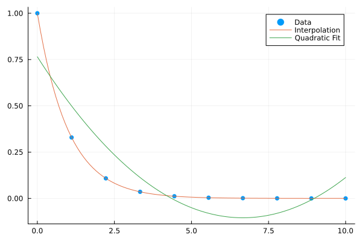
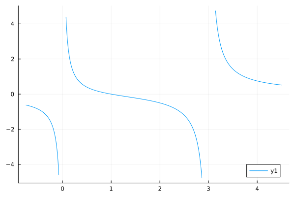

Polynomials.jl
Polynomials.jl is a Julia package that provides basic arithmetic, integration, differentiation, evaluation, root finding, and data fitting for univariate polynomials.
The Polynomials package is hosted on GitHub and installed as other Julia packages. Julia version 1.10 or higher is required.
The package can be loaded into the current session through
using PolynomialsConstruction and Evaluation
Construct a polynomial from its coefficients, lowest order first.
julia> Polynomial([1,0,3,4])Polynomial(1 + 3*x^2 + 4*x^3)An optional variable can be specified.
julia> Polynomial([1,2,3], :s)Polynomial(1 + 2*s + 3*s^2)A polynomial can be constructed from its roots.
julia> fromroots([1,2,3]) # (x-1)*(x-2)*(x-3)Polynomial(-6 + 11*x - 6*x^2 + x^3)A polynomial p can be evaluated at 1 using call notation:
julia> p = Polynomial([1, 0, -1])Polynomial(1 - x^2)julia> p(1)0The Polynomial constructor stores all coefficients using the standard basis with a vector. Other types (e.g. ImmutablePolynomial, SparsePolynomial, or FactoredPolynomial) use different back-end containers which may have advantage for some uses.
Arithmetic
The usual arithmetic operators are overloaded to work on polynomials, and combinations of polynomials and scalars.
julia> p = Polynomial([1,2])Polynomial(1 + 2*x)julia> q = Polynomial([1, 0, -1])Polynomial(1 - x^2)julia> 2pPolynomial(2 + 4*x)julia> 2 + pPolynomial(3 + 2*x)julia> p - qPolynomial(2*x + x^2)julia> p * qPolynomial(1 + 2*x - x^2 - 2*x^3)julia> q / 2Polynomial(0.5 - 0.5*x^2)julia> q ÷ p # `div`, also `rem` and `divrem`Polynomial(0.25 - 0.5*x)Note that operations involving polynomials with different variables will error.
julia> p = Polynomial([1, 2, 3], :x)Polynomial(1 + 2*x + 3*x^2)julia> q = Polynomial([1, 2, 3], :s)Polynomial(1 + 2*s + 3*s^2)julia> p + qERROR: ArgumentError: Polynomials have different indeterminates[...]Except for operations involving constant polynomials.
julia> p = Polynomial([1, 2, 3], :x)Polynomial(1 + 2*x + 3*x^2)julia> q = Polynomial(1, :y)Polynomial(1)julia> p + qPolynomial(2 + 2*x + 3*x^2)Mixing polynomial types
Arithmetic of different polynomial types is supported through promotion to a common type, which is typically the Polynomial type, but may be the LaurentPolynomial type when negative powers of the indeterminate are possible:
julia> p, q = ImmutablePolynomial([1,2,3]), Polynomial([3,2,1])(ImmutablePolynomial(1 + 2*x + 3*x^2), Polynomial(3 + 2*x + x^2))julia> p + qPolynomial(4 + 4*x + 4*x^2)julia> p, q = ImmutablePolynomial([1,2,3]), SparsePolynomial(Dict(0=>1, 2=>3, 10=>1))(ImmutablePolynomial(1 + 2*x + 3*x^2), SparsePolynomial(1 + 3*x^2 + x^10))julia> p + qLaurentPolynomial(2 + 2*x + 6*x² + x¹⁰)Integrals and Derivatives
Integrate the polynomial p, optionally adding a constant term C. For non-zero polynomials, the degree of the resulting polynomial is one higher than the degree of p.
julia> integrate(Polynomial([1, 0, -1]))Polynomial(1.0*x - 0.3333333333333333*x^3)julia> integrate(Polynomial([1, 0, -1]), 2)Polynomial(2.0 + 1.0*x - 0.3333333333333333*x^3)Differentiate the polynomial p. For non-zero polynomials, the degree of the resulting polynomial is one lower than the degree of p.
julia> derivative(Polynomial([1, 3, -1]))Polynomial(3 - 2*x)Root-finding
Return the d roots (or zeros) of the degree d polynomial p.
julia> roots(Polynomial([1, 0, -1]))2-element Vector{Float64}: -1.0 1.0julia> roots(Polynomial([1, 0, 1]))2-element Vector{ComplexF64}: 0.0 - 1.0im 0.0 + 1.0imjulia> roots(Polynomial([0, 0, 1]))2-element Vector{Float64}: 0.0 0.0By design, this is not type-stable; the return type may be real or complex.
The default roots function uses the eigenvalues of the companion matrix for a polynomial. This is an 𝑶(n^3) operation.
For polynomials with BigFloat coefficients, the GenericLinearAlgebra package can be seamlessly used:
julia> p = fromroots(Polynomial{BigFloat}, [1,2,3])Polynomial(-6.0 + 11.0*x - 6.0*x^2 + 1.0*x^3)julia> roots(p)ERROR: MethodError: no method matching eigvals!(::Matrix{BigFloat})[...]julia> using GenericLinearAlgebrajulia> roots(p)3-element Vector{Complex{BigFloat}}: 0.9999999999999999999999999999999999999999999999999999999999999999999999999999655 + 0.0im 1.999999999999999999999999999999999999999999999999999999999999999999999999999931 - 0.0im 2.999999999999999999999999999999999999999999999999999999999999999999999999999793 + 0.0imComments on root finding
The PolynomialRoots.jl package provides an alternative approach for finding complex roots to univariate polynomials that is more performant than
roots. It is based on an algorithm of Skowron and Gould.julia> import PolynomialRoots # import as `roots` conflictsjulia> p = fromroots(Polynomial, [1,2,3])Polynomial(-6 + 11*x - 6*x^2 + x^3)julia> PolynomialRoots.roots(coeffs(p))3-element Vector{ComplexF64}: 3.000000000000001 - 0.0im 1.9999999999999993 + 0.0im 1.0000000000000002 + 0.0imThe roots are always returned as complex numbers.
The FastPolynomialRoots package provides an interface to FORTRAN code implementing an algorithm of Aurentz, Mach, Robol, Vandrebril, and Watkins. that can handle very large polynomials (it is
𝑶(n^2)and backward stable). The AMRVW.jl package implements the algorithm in Julia, allowing the use of other number types.julia> using AMRVWjulia> AMRVW.roots(float.(coeffs(p)))3-element Vector{ComplexF64}: 0.9999999999999997 + 0.0im 2.0000000000000036 + 0.0im 2.9999999999999964 + 0.0imThe roots are returned as complex numbers.
Both
PolynomialRootsandAMRVWare generic and work withBigFloatcoefficients, for example.The
AMRVWpackage works with much larger polynomials than eitherrootsorPolynomialRoots.roots. For example, the roots of this 1000 degree random polynomial are quickly and accurately solved for:julia> filter(isreal, AMRVW.roots(rand(1001) .- 1/2))2-element Vector{ComplexF64}: 0.993739974989572 + 0.0im 1.0014677846996498 + 0.0imThe Hecke package has a
rootsfunction. TheHeckepackage utilizes theArblibrary for performant, high-precision numbers:julia> import Hecke # import as `roots` conflictsjulia> Qx, x = Hecke.PolynomialRing(Hecke.QQ)(Univariate Polynomial Ring in x over Rational Field, x)julia> q = (x-1)*(x-2)*(x-3)x^3 - 6*x^2 + 11*x - 6julia> Hecke.roots(q)3-element Vector{Nemo.fmpq}: 2 1 3This next polynomial has 3 real roots, 2 of which are in a cluster;
Heckequickly identifies them:julia> p = -1 + 254*x - 16129*x^2 + 1*x^17x^17 - 16129*x^2 + 254*x - 1julia> filter(isreal, Hecke._roots(p, 200)) # `_roots` not `roots`3-element Vector{Nemo.acb}: [0.007874015748031496052667730054749907629383970426203662570129818116411192289734968717460531379762086419 +/- 3.10e-103] [0.0078740157480314960733165219137540296086246589982151627453855179522742093785877068332663198273096875302 +/- 9.31e-104] [1.9066348541790688341521872066398429982632947292434604847312536201982593209326201234353468172497707769372732739429697289 +/- 7.14e-119]
To find just the real roots of a polynomial with real coefficients there are a few additional options to solving for all the roots and filtering by isreal.
The package IntervalRootFinding identifies real zeros of univariate functions and can be used to find isolating intervals for the real roots. For example,
julia> using Polynomials, IntervalArithmeticjulia> import IntervalRootFinding # its `roots` method conflicts with `roots`julia> p = fromroots(Polynomial, [1,2,3])Polynomial(-6 + 11*x - 6*x^2 + x^3)julia> IntervalRootFinding.roots(x -> p(x), 0..10)3-element Vector{IntervalRootFinding.Root{Interval{Float64}}}: Root([0.999999, 1.00001], :unique) Root([1.99999, 2.00001], :unique) Root([2.99999, 3.00001], :unique)The output is a set of intervals. Those flagged with
:uniqueare guaranteed to contain a unique root.The
RealPolynomialRootspackage provides a functionANewDscto find isolating intervals for the roots of a square-free polynomial, specified through its coefficients:julia> using RealPolynomialRootsjulia> st = ANewDsc(coeffs(p))There were 3 isolating intervals found:[2.62…, 3.62…]₂₅₆[1.5…, 2.62…]₂₅₆[-0.50…, 1.5…]₂₅₆These isolating intervals can be refined to find numeric estimates for the roots over
BigFloatvalues.julia> refine_roots(st)3-element Vector{BigFloat}: 2.99999999999999999999... 2.00000000000000000000... 1.00000000000000000000...This specialized algorithm can identify very nearby roots. For example, returning to this Mignotte-type polynomial:
julia> p = SparsePolynomial(Dict(0=>-1, 1=>254, 2=>-16129, 17=>1))SparsePolynomial(-1 + 254*x - 16129*x^2 + x^17)julia> ANewDsc(coeffs(p))There were 3 isolating intervals found:[1.5…, 3.5…]₅₃[0.0078740157480314960682066…, 0.0078740157480314960873178…]₁₃₉[0.0078740157480314960492543…, 0.0078740157480314960682066…]₁₃₉IntervalRootFindinghas issues disambiguating the clustered roots of this example:julia> IntervalRootFinding.roots(x -> p(x), 0..3.5)7-element Vector{IntervalRootFinding.Root{Interval{Float64}}}: Root([1.90663, 1.90664], :unique) Root([0.00787464, 0.00787468], :unknown) Root([0.00787377, 0.00787387], :unknown) Root([0.00787405, 0.00787412], :unknown) Root([0.00787396, 0.00787406], :unknown) Root([0.00787425, 0.00787431], :unknown) Root([0.00787394, 0.00787397], :unknown)For this example,
filter(isreal, Hecke._roots(p))also isolates the three real roots, but not quite as quickly.
Most of the root finding algorithms have issues when the roots have multiplicities. For example, both ANewDsc and Hecke.roots assume a square free polynomial. For non-square free polynomials:
The
Polynomials.Multroot.multrootfunction is available for finding the roots of a polynomial and their multiplicities. This is based on work of Zeng. Cf. [1], [2], [3].Here we see
IntervalRootFinding.rootshaving trouble isolating the roots due to the multiplicities:julia> p = fromroots(Polynomial, [1,2,2,3,3])Polynomial(-36 + 96*x - 97*x^2 + 47*x^3 - 11*x^4 + x^5)julia> IntervalRootFinding.roots(x -> p(x), 0..10)335-element Vector{IntervalRootFinding.Root{Interval{Float64}}}: Root([1.99999, 2], :unknown) Root([1.99999, 2], :unknown) Root([3, 3.00001], :unknown) Root([2.99999, 3], :unknown) ⋮ Root([2.99999, 3], :unknown) Root([2, 2.00001], :unknown)The
rootsfunction identifies the roots, but the multiplicities would need identifying:julia> roots(p)5-element Vector{Float64}: 1.000000000000011 1.9999995886034314 2.0000004113969276 2.9999995304339646 3.0000004695656672Whereas, the roots along with the multiplicity structure are correctly identified with
multroot:julia> Polynomials.Multroot.multroot(p)(values = [1.0000000000000004, 1.9999999999999984, 3.0000000000000018], multiplicities = [1, 2, 2], κ = 35.11176306900731, ϵ = 0.0)The
square_freefunction can help:julia> q = Polynomials.square_free(p)ANewDsc(q)Polynomial(-0.20751433915978448 + 0.38044295512633425*x - 0.20751433915986722*x^2 + 0.03458572319332053*x^3)julia> IntervalRootFinding.roots(x -> q(x), 0..10)3-element Vector{IntervalRootFinding.Root{Interval{Float64}}}: Root([0.999999, 1.00001], :unique) Root([1.99999, 2.00001], :unique) Root([2.99999, 3.00001], :unique)Similarly:
julia> ANewDsc(coeffs(q))There were 3 isolating intervals found:[2.62…, 3.62…]₂₅₆[1.5…, 2.62…]₂₅₆[-0.50…, 1.5…]₂₅₆
Fitting a polynomial to arbitrary data
The fit function will fit a polynomial (of degree deg) to data x and y using polynomial interpolation or a (weighted) least-squares approximation.
Fit a polynomial (of degree deg or less) to x and y using a least-squares approximation.
julia> xs = 0:4; ys = @. exp(-xs) + sin(xs);julia> p = fit(xs, ys); map(x -> round(x, digits=4), p)Polynomial(1.0 + 0.0593*x + 0.3959*x^2 - 0.2846*x^3 + 0.0387*x^4)julia> p = fit(ChebyshevT, xs, ys, 2); map(x -> round(x, digits=4), p)ChebyshevT(0.5413⋅T_0(x) - 0.8991⋅T_1(x) - 0.4238⋅T_2(x))This provides a visual example:
using Plots, Polynomialsxs = range(0, 10, length=10)ys = @. exp(-xs)f = fit(xs, ys) # degree = length(xs) - 1f2 = fit(xs, ys, 2) # degree = 2scatter(xs, ys, markerstrokewidth=0, label="Data")plot!(f, extrema(xs)..., label="Interpolation")plot!(f2, extrema(xs)..., label="Quadratic Fit")
Arnoldi fit
The use of a Vandermonde matrix to fit a polynomial to data is exponentially ill-conditioned for larger values of $n$. The Arnoldi orthogonalization fixes this problem. The ArnoldiFit polynomial type can avoid this issue when evaluation of the polynomial–-not other manipulations–-is of interest. Cf. [4], [5] and the ArnoldiVandermonde package.
julia> f(x) = 1/(1 + 25x^2)f (generic function with 1 method)julia> N = 80; xs = [cos(j*pi/N) for j in N:-1:0];julia> p = fit(Polynomial, xs, f.(xs));julia> q = fit(ArnoldiFit, xs, f.(xs));julia> maximum(abs, p(x) - f(x) for x ∈ range(-1, stop=1, length=500)) ≈ 3.304586010148457e16truejulia> maximum(abs, q(x) - f(x) for x ∈ range(-1, stop=1, length=500)) ≈ 1.1939520822012994e-7trueOther bases
A polynomial, e.g. a_0 + a_1 x + a_2 x^2 + ... + a_n x^n, can be seen as a collection of coefficients, [a_0, a_1, ..., a_n], relative to some polynomial basis. The most familiar basis being the standard one: 1, x, x^2, ... Alternative bases are possible. The ChebyshevT polynomials are implemented, as an example. The constructor is ChebyshevT, an exposed alias for MutableDensePolynomial{ChebyshevTBasis}.
julia> p1 = ChebyshevT([1.0, 2.0, 3.0])ChebyshevT(1.0⋅T_0(x) + 2.0⋅T_1(x) + 3.0⋅T_2(x))julia> p2 = ChebyshevT{Float64}([0, 1, 2])ChebyshevT(1.0⋅T_1(x) + 2.0⋅T_2(x))julia> p1 + p2ChebyshevT(1.0⋅T_0(x) + 3.0⋅T_1(x) + 5.0⋅T_2(x))julia> p1 * p2ChebyshevT(4.0⋅T_0(x) + 4.5⋅T_1(x) + 3.0⋅T_2(x) + 3.5⋅T_3(x) + 3.0⋅T_4(x))julia> derivative(p1)ChebyshevT(2.0⋅T_0(x) + 12.0⋅T_1(x))julia> integrate(p2)ChebyshevT(- 1.0⋅T_1(x) + 0.25⋅T_2(x) + 0.3333333333333333⋅T_3(x))julia> convert(Polynomial, p1)Polynomial(-2.0 + 2.0*x + 6.0*x^2)julia> convert(ChebyshevT, Polynomial([1.0, 2, 3]))ChebyshevT(2.5⋅T_0(x) + 2.0⋅T_1(x) + 1.5⋅T_2(x))Iteration
If its basis is implicit, then a polynomial may be seen as just a vector of coefficients. Vectors are 1-based, but, for convenience, most polynomial types are naturally 0-based, for purposes of indexing (e.g. getindex, setindex!, eachindex). Iteration over a polynomial steps through the underlying coefficients.
julia> as = [1,2,3,4,5]; p = Polynomial(as);julia> as[3], p[2], collect(p)[3](3, 3, 3)The pairs iterator, iterates over the indices and coefficients, attempting to match how pairs applies to the underlying storage model:
julia> v = [1,2,0,4]4-element Vector{Int64}: 1 2 0 4julia> p,ip,sp,lp = Polynomial(v), ImmutablePolynomial(v), SparsePolynomial(v), LaurentPolynomial(v, -1);julia> collect(pairs(p))4-element Vector{Pair{Int64, Int64}}: 0 => 1 1 => 2 2 => 0 3 => 4julia> collect(pairs(ip)) == collect(pairs(p))truejulia> collect(pairs(sp)) # unordered dictionary with only non-zero terms3-element Vector{Pair{Int64, Int64}}: 0 => 1 3 => 4 1 => 2julia> collect(pairs(lp))4-element Vector{Pair{Int64, Int64}}: -1 => 1 0 => 2 1 => 0 2 => 4The unexported monomials iterator iterates over the terms (p[i]*Polynomials.basis(p,i)) of the polynomial:
julia> p = Polynomial([1,2,0,4], :u)Polynomial(1 + 2*u + 4*u^3)julia> collect(Polynomials.monomials(p))4-element Vector{Any}: Polynomial(1) Polynomial(2*u) Polynomial(0) Polynomial(4*u^3)The map function for polynomials is idiosyncratic, as iteration over polynomials is over the vector of coefficients, but map will also maintain the type of the polynomial. Here we use map to smooth out the round-off error coming from the root-finding algorithm used internally when converting to the FactoredPolynomial type:
julia> p = Polynomial([24, -50, 35, -10, 1])Polynomial(24 - 50*x + 35*x^2 - 10*x^3 + x^4)julia> q = convert(FactoredPolynomial, p); # noisy form of `factor` subject to floating point vagariesjulia> map(x -> round(x, digits=10), q)FactoredPolynomial((x - 4.0) * (x - 2.0) * (x - 3.0) * (x - 1.0))The element type
Relationship between the T and P{T,X}
The addition of a polynomial and a scalar, such as
julia> using Polynomialsjulia> p = Polynomial([1,2,3], :x)Polynomial(1 + 2*x + 3*x^2)julia> p + 3Polynomial(4 + 2*x + 3*x^2)seems natural, but in Julia, as 3 is of type Int and p of type Polynomial{Int,:x} some addition must be defined. The basic idea is that 3 is promoted to the constant polynomial 3 with indeterminate :x as 3*one(p) and then addition of p + 3*one(p) is performed.
This identification of a scalar with a constant polynomial can go both ways. If q is a constant polynomial of type Polynomial{Int, :y} then we should expect that p+q would be defined, as p plus the constant term of q. Indeed this is the case
julia> q = Polynomial(3, :y)Polynomial(3)julia> p + qPolynomial(4 + 2*x + 3*x^2)If q is non-constant, such as variable(Polynomial, :y), then there would be an error due to the mismatched symbols. (The mathematical result would need a multivariate polynomial, not a univariate polynomial, as this package provides.)
The same conversion is done for polynomial multiplication: constant polynomials are treated as numbers; non-constant polynomials must have their symbols match.
There is an oddity–-though the following two computations look the same, they are technically different:
julia> one(Polynomial, :x) + one(Polynomial, :y)Polynomial(2.0)julia> one(Polynomial, :y) + one(Polynomial, :x)Polynomial(2.0)Both are constant polynomials over Int, but the first has the indeterminate :y, the second :x.
This technical difference causes no issues with polynomial addition or multiplication, as there constant polynomials are treated as numbers, but can be an issue when constant polynomials are used as array elements.
For arrays, the promotion of numbers to polynomials, allows natural constructions like:
julia> p = Polynomial([1,2],:x)Polynomial(1 + 2*x)julia> q = Polynomial([1,2],:y) # non-constant polynomials with different indeterminatesPolynomial(1 + 2*y)julia> [1 p]1×2 Matrix{Polynomial{Int64, :x}}: Polynomial(1) Polynomial(1 + 2*x)julia> [1 one(q)]1×2 Matrix{Polynomial{Int64, :y}}: Polynomial(1) Polynomial(1)However, as there would be an ambiguous outcome of the following an error is thrown.
julia> [one(p) one(q)]ERROR: ArgumentError: Polynomials have different indeterminates[...]In general, arrays with mixtures of non-constant polynomials with different indeterminates will error. By default, an error will occur when constant polynomials with different indeterminates are used as components. However, for typed arrays, conversion will allow such constructs to be used.
Using one(q) for a constant polynomial with indeterminate :y we have:
julia> P = typeof(p)Polynomial{Int64, :x} (alias for Polynomials.MutableDensePolynomial{Polynomials.StandardBasis, Int64, :x})julia> P[one(p) one(q)]1×2 Matrix{Polynomial{Int64, :x}}: Polynomial(1) Polynomial(1)Of course, by not being explicit, there are sill gotchas. For example, we can construct this matrix without a specific types:
julia> [one(p), one(q)+one(p)]2-element Vector{Polynomial{Int64, :x}}: Polynomial(1) Polynomial(2)but not this one:
julia> [one(p), one(p) + one(q)]ERROR: ArgumentError: Polynomials have different indeterminates[...]Also, mixing types can result in unspecific symbols, as this example shows:
julia> [1 p; p 1] + [1 2one(q); 3 4] # array{P{T,:x}} + array{P{T,:y}}2×2 Matrix{Polynomial{Int64}}: Polynomial(2) Polynomial(3 + 2*x) Polynomial(4 + 2*x) Polynomial(5)Though were a non-constant polynomial with indeterminate y replacing 2one(q) above, that addition would throw an error.
Non-number types for T
The coefficients of the polynomial may be non-number types, such as matrices or other polynomials, albeit not every operation is fully supported.
For example, a polynomial with matrix coefficients, might be constructed with:
julia> using Polynomialsjulia> a,b,c = [1 0;2 1], [1 0; 3 1], [1 0; 4 1]([1 0; 2 1], [1 0; 3 1], [1 0; 4 1])julia> p = Polynomial([a,b,c])Polynomial([1 0; 2 1] + [1 0; 3 1]*x + [1 0; 4 1]*x^2)julia> q = derivative(p)Polynomial([1 0; 3 1] + [2 0; 8 2]*x)Various operations are available, derivative was shown above, here are the vector-space operations:
julia> 2pPolynomial([2 0; 4 2] + [2 0; 6 2]*x + [2 0; 8 2]*x^2)julia> p + qPolynomial([2 0; 5 2] + [3 0; 11 3]*x + [1 0; 4 1]*x^2)polynomial multiplication:
julia> p * qPolynomial([1 0; 5 1] + [3 0; 18 3]*x + [3 0; 21 3]*x^2 + [2 0; 16 2]*x^3)polynomial evaluation, here either with a scalar or a matrix:
julia> p(2)2×2 Matrix{Int64}: 7 0 24 7julia> p(b)2×2 Matrix{Int64}: 3 0 18 3But if the type T lacks support of some generic functions, such as zero(T) and one(T), then there may be issues. For example, when T <: AbstractMatrix the output of p[degree(p)+1] is an error, as the implementation assumes zero(T) is defined. For static arrays, this isn't an issue, as there is support for zero(T). Other polynomial types, such as SparsePolynomial have less support, as some specialized methods assume more of the generic interface be implemented.
Similarly, using polynomials for T is a possibility:
julia> a,b,c = Polynomial([1],:y), Polynomial([0,1],:y), Polynomial([0,0,1],:y)(Polynomial(1), Polynomial(y), Polynomial(y^2))julia> p = Polynomial([a,b,c], :x)Polynomial(Polynomial(1) + Polynomial(y)*x + Polynomial(y^2)*x^2)julia> q = derivative(p)Polynomial(Polynomial(y) + Polynomial(2*y^2)*x)Again, much works:
julia> 2pPolynomial(Polynomial(2) + Polynomial(2*y)*x + Polynomial(2*y^2)*x^2)julia> p + qPolynomial(Polynomial(1 + y) + Polynomial(y + 2*y^2)*x + Polynomial(y^2)*x^2)julia> p(2)Polynomial(1 + 2*y + 4*y^2)julia> p(b)Polynomial(1 + y^2 + y^4)But much doesn't. For example, implicit promotion can fail. For example, the scalar multiplication p * b will fail, as the methods assume this is the fallback polynomial multiplication and not the intended scalar multiplication.
Rational functions
The package provides support for rational functions–-fractions of polynomials (for most types). The construction of the basic type mirrors the construction of rational numbers.
julia> P = FactoredPolynomialFactoredPolynomialjulia> p,q = fromroots(P, [1,2,3,4]), fromroots(P, [2,2,3,5])(FactoredPolynomial((x - 4) * (x - 1) * (x - 3) * (x - 2)), FactoredPolynomial((x - 5) * (x - 2)² * (x - 3)))julia> pq = p // q((x - 4) * (x - 1) * (x - 3) * (x - 2)) // ((x - 5) * (x - 2)² * (x - 3))julia> lowest_terms(pq)((x - 4.0) * (x - 1.0)) // ((x - 5.0) * (x - 2.0))julia> d,r = residues(pq); rDict{Float64, Vector{Float64}} with 2 entries: 5.0 => [1.33333] 2.0 => [0.666667]julia> x = variable(p);julia> for (λ, rs) ∈ r # reconstruct p/q from output of `residues` for (i,rᵢ) ∈ enumerate(rs) d += rᵢ//(x-λ)^i end endjulia> d((x - 1.0000000000000002) * (x - 4.0)) // ((x - 5.0) * (x - 2.0))A basic plot recipe is provided.
using Plots, PolynomialsP = FactoredPolynomialp,q = fromroots(P, [1,2,3]), fromroots(P, [2,3,3,0])plot(p//q)┌ Warning: Increasing Δ, terminating search
└ @ Polynomials.Multroot ~/work/Polynomials.jl/Polynomials.jl/src/polynomials/multroot.jl:286
Related Packages
StaticUnivariatePolynomials.jl Fixed-size univariate polynomials backed by a Tuple
MultiPoly.jl for sparse multivariate polynomials
DynamicPolynomials.jl Multivariate polynomials implementation of commutative and non-commutative variables
MultivariatePolynomials.jl for multivariate polynomials and moments of commutative or non-commutative variables
PolynomialRings.jl A library for arithmetic and algebra with multi-variable polynomials.
AbstractAlgebra.jl, Nemo.jl for generic polynomial rings, matrix spaces, fraction fields, residue rings, power series, Hecke.jl for algebraic number theory.
LaurentPolynomials.jl A package for Laurent polynomials.
CommutativeAlgebra.jl the start of a computer algebra system specialized to discrete calculations with support for polynomials.
PolynomialRoots.jl for a fast complex polynomial root finder. For larger degree problems, also FastPolynomialRoots and AMRVW.
SpecialPolynomials.jl A package providing various polynomial types beyond the standard basis polynomials in
Polynomials.jl. Includes interpolating polynomials, Bernstein polynomials, and classical orthogonal polynomials.ClassicalOrthogonalPolynomials.jl A Julia package for classical orthogonal polynomials and expansions. Includes
chebyshevt,chebyshevu,legendrep,jacobip,ultrasphericalc,hermiteh, andlaguerrel. The same repository includesFastGaussQuadrature.jl,FastTransforms.jl, and theApproxFunpackages.
Contributing
If you are interested in this project, feel free to open an issue or pull request! In general, any changes must be thoroughly tested, allow deprecation, and not deviate too far from the common interface. All PR's must have an updated project version, as well, to keep the continuous delivery cycle up-to-date.